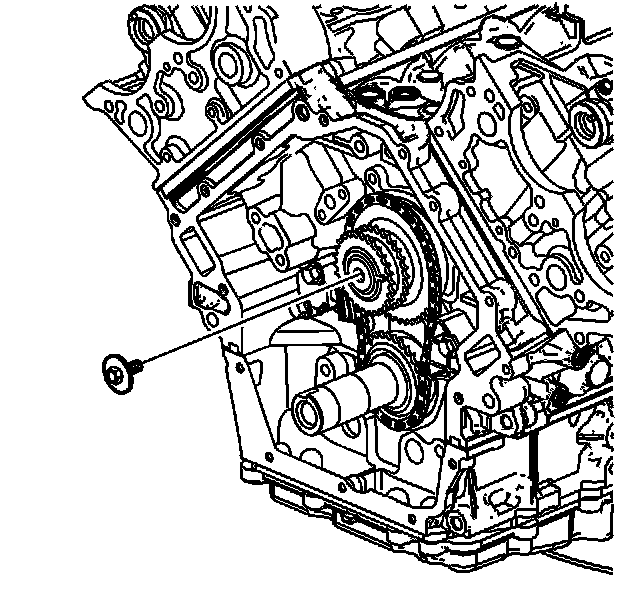
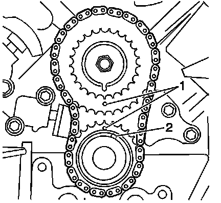

113. Primary Camshaft Drive Chain Installation
Primary Camshaft Drive Chain Installation
Tools Required
J 39946 Crankshaft Socket - 4.0L and 4.6L

1. Install the primary camshaft drive chain on the camshaft intermediate drive shaft sprocket and crankshaft sprocket.
2. Align the timing marks (1) of the camshaft intermediate drive shaft sprocket and crankshaft sprocket. Ensure the marks are aligned vertically.

3. Ensure the number one piston is at Top Dead Center (TDC) and the crankshaft pin (1) is approximately at the one o'clock position using the J 39946 .
4. Install the primary camshaft drive chain, camshaft intermediate drive shaft sprocket and crankshaft sprocket as an assembly (3) onto the camshaft intermediate drive shaft (4) and the crankshaft (2).

Notice: Refer to Fastener Notice (Fastener Notice) .
5. Install the camshaft intermediate drive shaft sprocket bolt.
Tighten the camshaft intermediate drive shaft sprocket bolt to 60 N.m (44 lb ft).

6. Install the primary camshaft drive chain guide.
7. Install the primary camshaft drive chain guide bolts.
Tighten the primary camshaft drive chain guide bolts to 25 N.m (18 lb ft).

8. Collapse the primary camshaft drive chain tensioner using the following procedure:
1. Rotate the ratchet release lever counterclockwise and hold.
2. Collapse the primary camshaft drive chain tensioner shoe and hold.
3. Release the ratchet lever and slowly release the pressure on the shoe.
9. When the ratchet lever moves to the first detent a click should be heard and felt. Insert a pin through the hole in the release lever in order to lock the primary camshaft drive chain tensioner shoe in the collapsed position.

Important: Ensure the primary camshaft drive chain tensioner release lever is facing out.
10. Install the primary camshaft drive chain tensioner.
11. Install the primary camshaft drive chain tensioner bolts.
Tighten the primary camshaft drive chain tensioner bolts to 25 N.m (18 lb ft).
12. Remove the pin in the release lever locking the primary camshaft drive chain tensioner.

13. Ensure the timing marks (1) are aligned vertically.